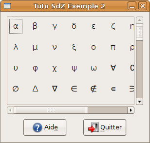

Quand on veut faire un programme convivial, on s'efforce en général de concevoir une interface graphique de qualité. Parfois même, dans une équipe, certaines personnes sont chargées tout spécialement de cet aspect du programme. Or, la bibliothèque standard d'OCaml offre un choix limité... puisqu'elle ne propose que Tcl/Tk (via le module LablTk). Peut-être savez-vous déjà que le résultat n'est pas très agréable à regarder (voyez ocamlbrowser par exemple ou, pour citer quelque chose de très différent, aMSN). Fort heureusement, une interface GTK (un binding en anglais) pour OCaml a été réalisée, pour notre plus grand bonheur : c'est LablGTK. Et c'est de cette bibliothèque que nous allons parler un peu ici.
Attention : ce tutoriel n'est ni une introduction à OCaml ni une introduction à GTK. Il est donc conseillé de le lire avec quelques notions en poche. Songez plutôt : ce n'est qu'un mini-tuto... il ne peut pas y avoir vraiment beaucoup de choses dedans. ;)
La version 3 d'OCaml a introduit plusieurs nouveaux concepts « avancés » dont LablGTK se sert beaucoup. On dit généralement qu'ils sont « avancés » dans la mesure où il n'est absolument pas indispensable de les aborder dans le cadre d'une introduction au langage. Tout ceci m'a donc incité à commencer ce tutoriel par une brève présentation de ces quelques points. Ceux qui savent déjà tout des arguments nommés, des arguments optionnels et des variants polymorphes peuvent passer d'emblée à la deuxième partie du tutoriel.
Les arguments nommés
Si vous utilisez déjà OCaml, vous avez probablement déjà utilisé les modules String et Unix. Si vous regardez attentivement la liste des modules de la bibliothèque standard, vous verrez qu'il existe également des modules StringLabels et UnixLabels.
C'est vrai ça ! Mais, à quoi peuvent-ils bien servir vu qu'ils contiennent exactement les mêmes fonctions que String et Unix ?
En fait, la grande différence entre ces modules réside dans la présence d'étiquettes (ou labels en anglais), que j'appellerai « arguments nommés » dans la suite de ce tutoriel (je crois que c'est la bonne traduction, mais comme je les ai toujours connus comme étant des labels, je suis un peu démuni ^^ ).
Bon, d'accord, il y a de petites différences... mais ça ne change pas le code. Alors à quoi cela peut-il bien servir ?
Eh bien, les arguments nommés permettent de préciser la nature de certains arguments lorsque leur type n'est pas très explicite, ou quand il y a vraiment beaucoup d'arguments. Je vais vous donner un exemple. Considérez cette fonction sans grand intérêt :
let boucle min max step f =
let rec loop = function
| i when i > max -> ()
| i -> f i;
loop (i + step)
in loop min
Si vous la tapez dans l'interpréteur, vous verrez que sa signature n'utilise que des types simples... mais qu'on ne sait pas trop, en la voyant, à quoi correspondent tous ces entiers :
val boucle : int -> int -> int -> (int -> 'a) -> unit
Nous rencontrons donc un premier problème : celui de la lisibilité. On aimerait bien que la seule signature d'une fonction suffise à nous en faire comprendre le fonctionnement (c'est ce qui rend précieux des outils tels que ocamlbrowser et ocamldoc). Or, dans le cas présent, les types ne nous sont d'aucun secours. Nous allons donc écrire quelque chose comme ça :
let boucle ~min ~max ~step f =
let rec loop = function
| i when i > max -> ()
| i -> f i;
loop (i + step)
in loop min
L'ajout d'un tilde (~) devant min, max et step permet d'associer un nom à chacun des arguments dans la signature de la fonction :
val boucle : min:int -> max:int -> step:int -> (int -> 'a) -> unit
L'utilisation des arguments nommés permet aussi d'écrire les arguments dans n'importe quel ordre (ou presque). Par exemple, ceci fonctionne très bien :
Notez que si vous indiquez tous les arguments d'une fonction, autrement dit si vous ne faites pas d'application partielle, vous pouvez vous abstenir de préciser les étiquettes des arguments.
let min = 2 and max = 8 in
boucle ~min ~max ~step:2 print_int
Les arguments optionnels
Avec une valeur par défaut
Les arguments optionnels sont aussi des arguments nommés, mais ils introduisent une propriété supplémentaire puisqu'ils permettent de rendre un argument facultatif (avec, éventuellement, une valeur par défaut). Voici d'abord un exemple avec des valeurs par défaut :
let boucle ?(min = 0) ?(max = 100) ?(step = 1) f =
let rec loop = function
| i when i > max -> ()
| i -> f i;
loop (i + step)
in loop min
La signature de la fonction est aussi lisible qu'avec les arguments nommés, mais, chose nouvelle, il n'est plus nécessaire d'indiquer tous les paramètres (min, max et step). Notez que les tildes (~) ont été remplacés par des points d'interrogation (?).
val boucle : ?min:int -> ?max:int -> ?step:int -> (int -> 'a) -> unit
Sans valeur par défaut
Que se passe-t-il maintenant si nous ne mettons pas de valeur par défaut ? Eh bien, c'est une bonne question... qui me permet de vous présenter une première subtilité. S'il n'y a pas de valeur par défaut, l'argument est de type 'a option dans le corps de la fonction. C'est logique, mais il faut le savoir. Un exemple pour illustrer ce comportement :
let weird_is_lower ?x y =
match x with
| None -> true
| Some x -> y < x
J'ai qualifié cette fonction de curieuse (weird) parce qu'elle n'est pas vraiment très utile. Son seul mérite est de montrer que le paramètre x est bien de type 'a option.
Utilisation des arguments optionnels
Puisqu'un exemple vaut mieux qu'un long discours, je vous propose quelques lignes de code à essayer dans l'interpréteur... pour découvrir la deuxième subtilité.
# let incr ?(step = 1) x = x + step;;
val incr : ?step:int -> int -> int = <fun>
# incr 1 ;;
- : int = 2
# incr ~step:2 1 ;;
- : int = 3
# incr ?step:(Some 3) 1 ;;
- : int = 4
#
Variants polymorphes
Vous savez sans doute que le type somme d'OCaml permet de créer de nouveaux types dont la manipulation est grandement facilitée par le filtrage. Par exemple, on peut construire un module Carte dans lequel est défini le type suivant :
type t = As | Roi | Dame | Valet | Valeur of int
Le principal reproche que l'on peut formuler à l'encontre de ce type réside dans le manque de flexibilité qui apparaît lorsqu'on veut s'en servir dans un autre module. On doit en effet utiliser la notation longue Carte.As ou Carte.Dame. Il y a derrière tout ça la notion d'espace de nom (namespace en anglais), mais il est inutile d'en dire plus ici.
C'est pourquoi LablGTK utilise exclusivement les variants polymorphes.
De quoi s'agit-il ?
Les variants polymorphes sont conçus pour être accessibles tels quels en dehors du module où ils sont définis. Ils ont bien d'autres caractéristiques (détaillées dans le manuel de référence), mais nous ne nous y attarderons pas. Voyons plutôt à quoi ressemble le type Carte.t lorsqu'il est réécrit avec des variants polymorphes :
type t = [ `As | `Roi | `Dame | `Valet | `Valeur of int ]
Le caractère qui introduit un variant polymorphe est un accent grave (AltGr + 7).
Comme je l'ai dit plus haut, la bibliothèque LablGTK utilise beaucoup les variants polymorphes pour définir des groupes de valeurs possibles (par exemple pour une fenêtre : `CENTER centre la fenêtre sur l'écran, `CENTER_ON_PARENT centre la fenêtre par rapport à son parent, et ainsi de suite). Voici d'autres exemples :
le type GtkStock.id contient les icônes prédéfinies de GTK ;
le type Gtk.Tags contient de très nombreux types à base de variants polymorphes... qui ont été ainsi regroupés parce qu'on peut s'en servir sans se soucier de leur module d'origine.
Pour bien comprendre comment est organisée la bibliothèque LablGTK, nous allons la présenter en restreignant peu à peu notre champ d'observation. Nous partirons donc d'une vue d'ensemble pour nous pencher ensuite sur l'organisation d'une petite partie de la bibliothèque.
Organisation en modules
Modules principaux
LablGTK est une grosse bibliothèque. De nombreux modules ont été créés pour en faciliter l'utilisation. Ceux qui nous intéressent le plus pour le moment sont tous préfixés par la lettre G seule. Voici ce que contiennent ces modules :
À ces modules s'ajoutent GUtil, qui contient des fonctions et des classes utiles au développement d'applications avec LablGTK, GToolbox et Gaux, qui contiennent des fonctions auxiliaires (notamment sur le type 'a option), et GBroken, qui contient les widgets obsolètes (deprecated).
Autres modules
Mais ce n'est pas tout ! Il existe de nombreux autres modules. Certains font un lien avec d'autres outils (dont GtkSpell pour la correction de l'orthographe), d'autres fournissent des outils pour le développement d'applications (par exemple Xml_lexer est un petit analyseur lexical pour le XML). Enfin, on trouve des modules préfixés par Gtk (comme GtkWindow, GtkEdit, GtkMenu...) qui contiennent les aspects « bas niveau » de la bibliothèque ; à ce titre, ils ne devraient pas être utilisés tels quels (à l'exception notable de GtkStock qui permet de manipuler les collections d'icônes de l'application).
Zoom sur un module
Que trouve-t-on dans un module ? Eh bien, c'est très simple. On trouve des classes, qui ne sont presque jamais utilisées directement, et des fonctions qui aident à créer de nouveaux widgets. Ces fonctions possèdent en général de nombreux arguments optionnels, et permettent d'alléger le code. Voici deux exemples équivalents.
Sans utiliser les arguments des fonctions :
let source =
let source = GSourceView.source_view () in
source#set_insert_spaces_instead_of_tabs true;
source#set_highlight_current_line true;
source#set_tabs_width 5;
source
En utilisant les arguments des fonctions :
let source = GSourceView.source_view
~insert_spaces_instead_of_tabs:true
~highlight_current_line:true
~tabs_width:5 ()
On préfère donc généralement utiliser les fonctions pour créer des widgets... surtout que OCaml ne dispose pas de structure du type with widget do pour alléger le code (à moins que vous ne maîtrisiez le démoniaque camlp4...)
Pour terminer notre présentation de LablGTK, je vous propose de détailler ensemble deux petits programmes sans prétention. Vous verrez également comment les compiler en code natif (c'est presque pareil pour le bytecode, et je suppose que vous savez déjà qu'il faut remplacer les .cmxa par .cma, et les .cmx par .cmo). Attention ! Tous ces exemples ont été testés sous GNU/Linux uniquement.
Exemple 1 : une fenêtre avec un bouton
Programme
Ce premier exemple tout simple consiste à créer une fenêtre de taille 50 x 100 pixels, dans laquelle se trouve un bouton "Bonjour !" qui affiche "Bonjour X !" sur la sortie standard stdout (X est bien entendu remplacé par le nom de l'utilisateur).
(* Initialisation de GTK. Voir la discussion plus loin. *)
let _ = GMain.init ()
(* Fenêtre principale de l'application. *)
let window = GWindow.window
~title:"Tuto SdZ Exemple 1"
~height:50
~width:100 ()
(* Bouton qui souhaite le bonjour à l'utilisateur. *)
let say_hello = GButton.button
~label:"Bonjour !"
~packing:window#add ()
(* Fonction qui affiche le message sur stdout. *)
let print_hello () =
let user = Glib.get_user_name () in
Printf.printf "Bonjour %s !\n%!" (String.capitalize user)
let _ =
window#connect#destroy ~callback:GMain.quit;
say_hello#connect#clicked ~callback:print_hello;
window#show ();
GMain.main ()
Une petite remarque sur ce code avant d'aller plus loin : avez-vous remarqué l'indentation quelque peu singulière des arguments nommés ? C'est une habitude avec LablGTK, pour améliorer la lisibilité, car on préfère éviter les trop longues lignes (par convention, on se limite à 80 colonnes, quel que soit le langage utilisé).
Compilation
Pour commencer, rappelons brièvement quelles sont les extensions utilisées par OCaml... et leur origine « du côté du programmeur » :
Extension
Compilateur
Type de fichier
.cmxa
ocamlopt
Bibliothèque (par exemple lablgtk.cmxa)
.cma
ocamlc
Bibliothèque (par exemple lablgtk.cma)
.cmx
ocamlopt
Fichier ml (implémentation)
.cmo
ocamlc
Fichier ml (implémentation)
.cmi
ocamlc/ocamlopt
Fichier mli (interface)
Un autre point important est l'option -I (i majuscule), disponible aussi bien avec ocamlc qu'ocamlopt. Elle permet d'ajouter un répertoire à la liste des répertoires parcourus par un compilateur (pour trouver des modules ou des bibliothèques). Lorsque ce répertoire est un sous-dossier du répertoire d'installation d'OCaml (celui que renvoie la commande ocamlc -where), on le préfixe avec un +. Ainsi, si on veut compiler notre exemple en code natif, on utilisera ocamlopt -I +lablgtk2 lablgtk.cmxa exemple1.ml -o exemple.
Exemple 2 : un peu plus gros
Programme
Il s'agit d'un exemple plus ambitieux. J'ai voulu montrer qu'on peut créer sans trop d'effort des interfaces plus fournies que ce que laisse entrevoir le premier exemple. Ne vous inquiétez pas si vous ne comprenez pas tout : ce tutoriel n'est pas là pour tout vous expliquer. Il s'agit juste d'une introduction. Vous gagnerez beaucoup à consulter les nombreuses ressources disponibles sur la toile (en anglais) : tutoriel GTK adapté à OCaml, API de la bibiothèque, tutoriel centré sur GtkTreeView, liste de diffusion, exemples fournis avec la bibliothèque et... les codes écrits par les autres !
let _ = GMain.init ()
(* Fenêtre principale (non redimensionnable). *)
let window = GWindow.window
~width:300
~resizable:false
~title:"Tuto SdZ Exemple 2" ()
(* Conteneur principal, pour pouvoir insérer plusieurs widgets. En effet, les
* fenêtres (GtkWindow) ne peuvent contenir qu'un seul enfant. *)
let vbox = GPack.vbox
~spacing:10
~border_width:10
~packing:window#add ()
(* Insertion de barres de défilement. *)
let scroll = GBin.scrolled_window
~height:200
~hpolicy:`ALWAYS
~vpolicy:`ALWAYS
~packing:vbox#add ()
(* Conteneur en forme de tableau. La méthode add_with_viewport permet d'insérer
* un conteneur tel que GPack.table (GtkTable) en le faisant défiler à l'aide
* des barres de défilement de GBin.scrolled_window (GtkScrolledWindow). *)
let table = GPack.table
~row_spacings:5
~col_spacings:5
~homogeneous:true
~packing:scroll#add_with_viewport ()
(* Un conteneur spécialement conçu pour les boutons. Essayez de remplacer
* `SPREAD par `EDGE pour voir ce que ça fait... *)
let bbox = GPack.button_box `HORIZONTAL
~layout:`SPREAD
~packing:(vbox#pack ~expand:false) ()
let help_message () = print_endline "Cliquez sur \"Quitter\" pour quitter"
(* Un bouton pour obtenir de l'aide. *)
let help =
let button = GButton.button
~stock:`HELP
~packing:bbox#add () in
button#connect#clicked ~callback:help_message;
button
(* Un bouton pour quitter. *)
let quit =
let button = GButton.button
~stock:`QUIT
~packing:bbox#add () in
button#connect#clicked ~callback:GMain.quit;
button
(* Un tableau de symboles obtenus grâce à leur code UTF-8. *)
let symbols =
Array.concat [
(* Lettres grecques minuscules. *)
Array.init 25 (fun i -> Glib.Utf8.from_unichar (i + 945));
(* Divers symboles mathématiques. *)
Array.init 256 (fun i -> Glib.Utf8.from_unichar (i + 8704));
]
(* Le conteneur GPack.table (GtkTable) est rempli : chaque case reçoit un bouton
* contenant un symbole du tableau < symbols > défini ci-dessus. Le symbole est
* inséré dans une étiquette (GtkLabel) pour pouvoir utiliser les balises Pango
* (notamment <big> et </big> qui augmentent la taille du texte). *)
let init_table () =
Array.iteri (fun i sym ->
let button = GButton.button
~relief:`NONE
~packing:(table#attach ~left:(i mod 10) ~top:(i / 10)) ()
and markup = Printf.sprintf "<big>%s</big>" sym in
ignore (GMisc.label ~markup ~packing:button#add ())
) symbols
let _ =
init_table ();
window#connect#destroy ~callback:GMain.quit;
window#show ();
GMain.main ()
Et avec tout ça, qu'obtient-on ? Quelque chose comme ceci :

Compilation
Comme précédemment, il y a plusieurs manières de procéder. Je vous en donne une seule, avec l'interpréteur, parce que c'est bien suffisant pour cet exemple.
cacophrene$ ocaml -w s -I +lablgtk2 lablgtk.cma exemple2.ml
Notez la présence de l'option -w s dans la ligne de commande. Elle indique de ne pas afficher les avertissements de type S (Warning S: this expression should have type unit.), car il y en a généralement beaucoup dans les programmes qui utilisent LablGTK... et puis on n'a pas envie d'utiliser mille fois la fonction ignore ou let _ = (...) (justification très subjective : « ça alourdit le code »).
Références / liens utiles
Voici les liens qui ont servi à la rédaction de ce mini-tuto. Vous pouvez les consulter pour obtenir de plus amples renseignements.
Voilà, l'essentiel est dit ! Vous pouvez maintenant créer de jolies interfaces graphiques bien intégrées dans le bureau GNOME (pour ceux qui codent sous GNU/Linux). N'hésitez pas à consulter l'API de la bibliothèque (disponible en ligne ici), la liste de diffusion et les exemples de code fournis avec les sources !